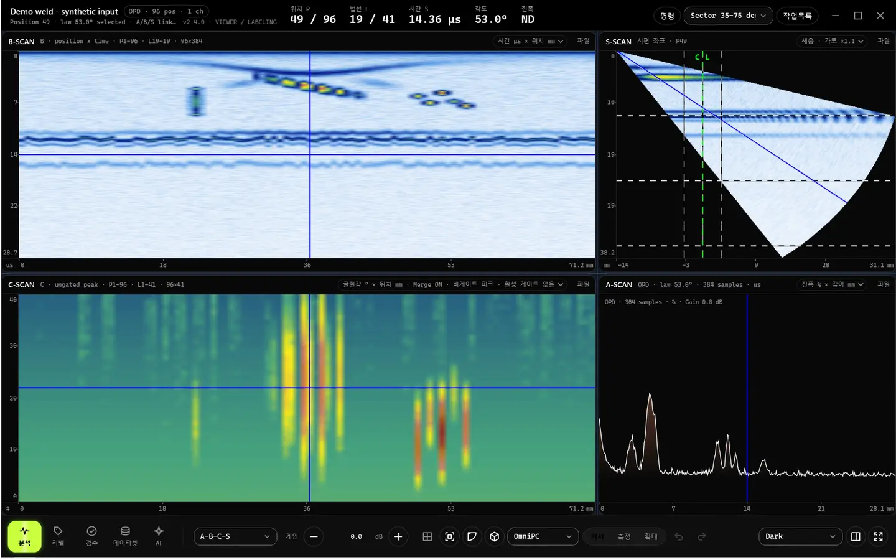

신호에서 기록까지
신호를 읽고 판단을 남기다.
한 위치를 네 가지 시선으로 봅니다. 연결된 스캔에서 신호를 확인하고, 측정의 근거를 이어 갑니다.
판단은 사람이 남깁니다. 이 화면은 위치와 차이를 보여 주며, 자동으로 판정하지 않습니다.
커서에서 측정까지
하나의 위치,
이어지는 시선.
A의 파형, B의 단면, C의 분포, S의 각도를 같은 취득 위치에서 읽습니다. S-scan 채움과 논리 Channel도 원본 취득 신호를 보는 방식입니다.
화면 좌표는 원본 취득 좌표와 같지 않습니다. 표시 Gain을 바꿔도 원본 표본과 측정값은 바뀌지 않습니다.
기준을 찍고,
차이를 읽다.
위치를 고르고 측정 모드를 켠 뒤 커서를 옮깁니다. 웹은 실제 프레임을 고를 뿐, 측정값을 만들거나 보간하지 않습니다.
먼저 검토하고,
따로 저장합니다.
신호에서 만든 초안을 확인하고 라벨을 메모리에 반영합니다. 파일 저장은 별도의 명시적 행동입니다. 저장했다고 검토가 끝난 것은 아닙니다.
같은 결함의 신호를
사람이 묶습니다.
서로 다른 위치에서 본 관측을 묶고 경로를 남깁니다. Direct와 Leg의 표시는 관측의 연결 정보이지 자동으로 확정한 결함 판정이 아닙니다.
형상 신호를
따로 남기다.
검토한 형상 에코는 미관련 띠로 표시합니다. 해치가 생겼다는 것과 정상으로 판정했다는 것은 다릅니다.
본 범위와
아직 안 본 범위.
사람이 확인한 범위만 검토 완료로 남깁니다. 라벨과 미관련 표시는 그대로 두며, 나중에 라벨이 바뀐 영역은 다시 검토 대상이 됩니다.
표시가 아니라,
근거를 내보냅니다.
구조가 필요한 라벨은 v9 안내를 거쳐 저장합니다. 학습 NPZ v3에는 결함·미관련·검토 완료와 미검토의 차이를 유지합니다. 내보내기가 자동 승인이나 모델 성능의 증거는 아닙니다.
공간마다
의미가 다릅니다.
Physical은 기하와 반사 경로, S 적층은 전개 표현, native P/L/S는 취득 인덱스 공간입니다. 서로 같은 XYZ나 교정된 결함 치수로 읽지 않습니다.
같은 기록,
두 작업 환경.
같은 합성 데모를 실제 앱의 Light와 Dark로 봅니다. 웹페이지의 테마 전환이나 신호값의 변화가 아닙니다.
변하지 않는
작업 원칙.
-
원본은 그대로 둡니다.
표시 Gain과 컬러맵은 화면만 바꿉니다. 원본 표본과 측정값은 그대로입니다.
-
후보는 라벨이 아닙니다.
연구용 AI는 선택 사항입니다. 별도의 모델·환경·사용 동의가 필요하며 사람이 확인하기 전에는 확정 라벨이 아닙니다.
-
좌표의 의미를 지킵니다.
시간·깊이·위치·각도와 취득 인덱스를 한 숫자로 섞지 않습니다.
입력과 시연의 경계.
NDE · UVDATA · CIVA 프로젝트 · OPD · ODAT. 지원 범위는 형식 버전과 취득 메타데이터에 따릅니다. 이 페이지의 합성 입력은 실제 파일 parser의 호환성 검증이 아닙니다.
시연에 관하여.
실제 앱 화면인가요?
PAUT AI 2.4.0 실제 Windows 앱이 공개용 합성 입력을 렌더링한 화면입니다. 생성형 이미지나 현장 검사 결과, 고객 데이터가 아닙니다. 웹은 기록된 프레임을 보여 줍니다.
브라우저에서 검사 파일을 분석하나요?
아닙니다. 신호 계산과 라벨 저장은 Windows 앱에서 수행합니다. 버튼·슬라이더·확대는 이미 캡처한 장면만 고릅니다.
저장하면 검토 완료인가요?
메모리 반영, 파일 저장, 사람의 검토 결정은 서로 다릅니다. 저장된 라벨도 검토 결정 전까지 미검토일 수 있습니다.
AI가 판정하거나 자동으로 저장하나요?
연구용 AI 후보는 사람이 검증하는 선택적 보조입니다. 자동 판정·자동 승인·자동 라벨 저장을 뜻하지 않습니다.
설치 파일과 모델도 제공하나요?
이 공개 저장소는 소개 자료만 제공합니다. 비공개 독점 앱 소스, 설치 프로그램, AI 모델 패키지는 포함하지 않습니다.
움직임을 멈추고 자세히 볼 수 있나요?
일시정지와 장면 버튼·슬라이더를 쓰세요. 화면 확대에서는 원본 크기로 이동해 읽을 수 있습니다. 모션 감소 설정에서는 자동재생과 pin·scrub 대신 정지 장면을 직접 선택합니다.
신호의 맥락에서,
판단의 기록까지.
제품 소개 자료와 기술 범위를 공개 저장소에서 확인하세요.
공개 소개 저장소